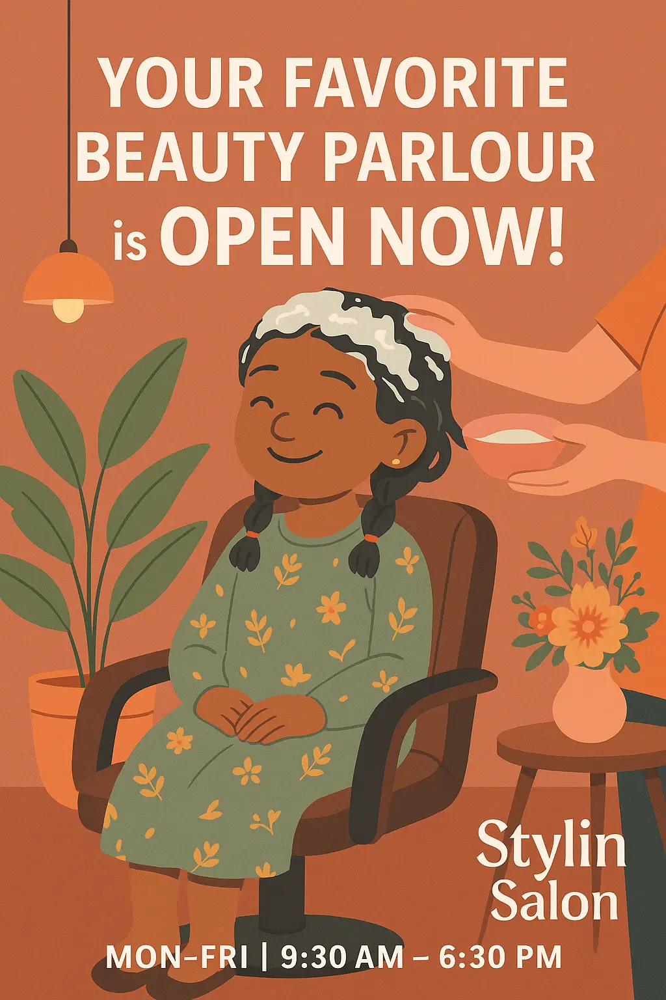

Need a Beauty Parlour Near You That's Open Now? Come by Stylin Salon, Kottayam!
Ever found yourself searching for a “beauty parlour near me open now” at the last minute? Maybe you’ve got a surprise event, a sudden plan, or just really need some self-care after a long day. We get it — and that’s exactly why Stylin Salon in Kottayam is here for you.
At Stylin Salon, we believe beauty shouldn’t wait. Whether it’s a quick touch-up, a relaxing facial, or a full makeover, we’re open and ready when you need us.
What We Offer:
We’re known for a variety of services, all tailored to your comfort and style:
- Haircuts, spa, and styling
- Full body and targeted waxing
- Skin care, facials, and clean-ups
- Saree draping and event makeup
- Bridal packages and party-ready looks
- Manicure, pedicure, and polish
- Natural hair and dandruff treatments
- Special services for kids and “Mummy & Me” combos
We are Open Every Day except Sundays!
Our salon is open from 9:30 AM to 6:30 PM, so whether you're searching “beauty parlour near me open now” in the morning or evening, you’ll find us ready and happy to help.
Walk In or Book Ahead
You can walk right in or book through a quick WhatsApp message. We keep things easy and welcoming — just the way beauty care should be.
Phone: 7736417677
Website: www.stylinsalon.in
Location: MC Road, opp. Tonico Cafe, Nagampadam, Kottayam 686001
Stylin Salon is more than a beauty parlour — it’s your trusted space for relaxation, confidence, and a little “me time” whenever you need it.